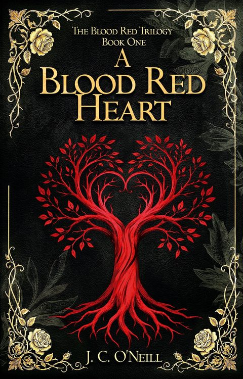

Book one
A Blood Red Heart
For some women, the greatest act of resistance is survival.
Legend tells that every five hundred years, west of the Pennine Mountains, the Beloved is born: a woman chosen to bring balance to the secret world that exists alongside our own. The Beloved has now come again, but this time she has been born on the wrong side of the mountains.
Lonely, exhausted and carrying a dark secret, Dr Charlie Hart can’t remember her past, but it refuses to forget her. Chance brings Charlie to Rowans Holt, an ancient house owned by brilliant recluse Sally Marshall, where she finds unexpected friendship and sanctuary. But when the manipulative Marcus Rosendale threatens to destroy everything, Charlie’s secret awakens.